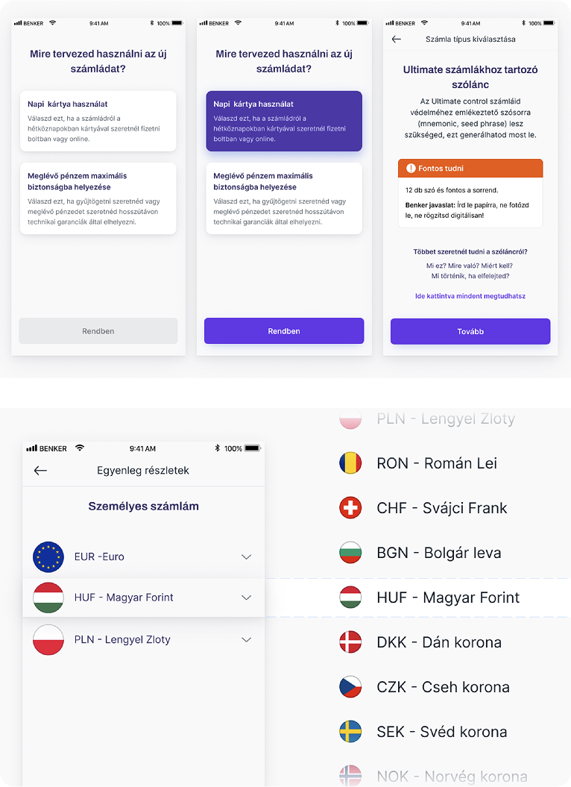
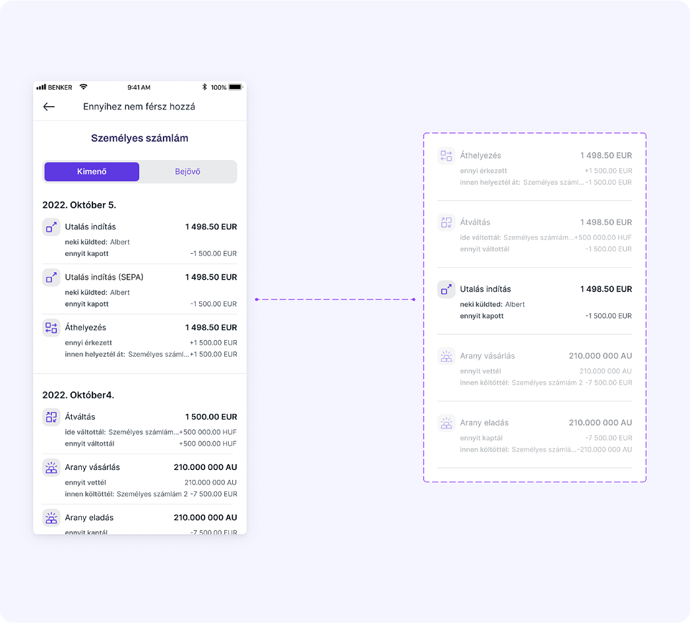
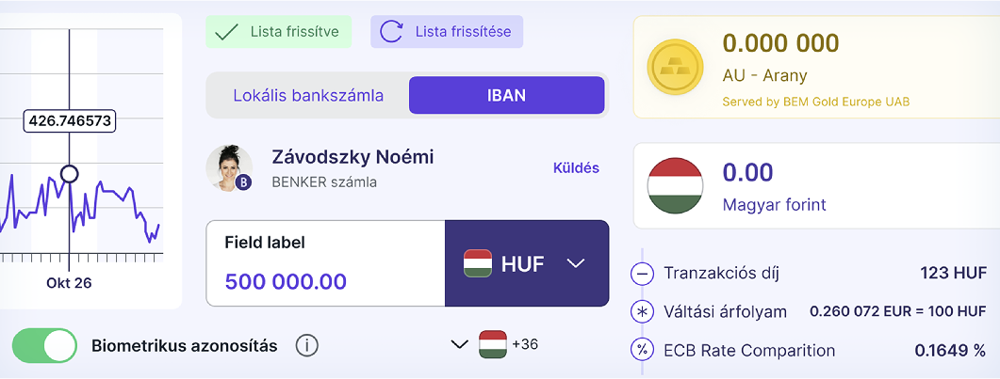
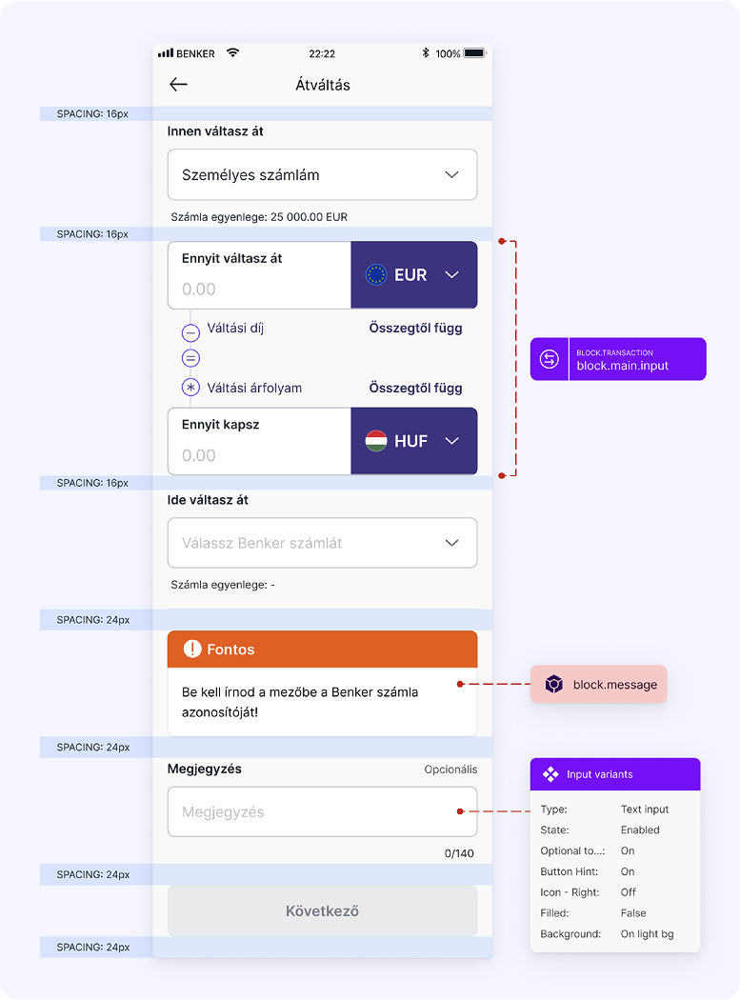

- Role
- Design lead and hands-on product designer
- Focus
- Regulated onboarding, KYC and transactions
- Period
- Research through delivery
- Delivery
- Reusable multi-market patterns
Measurement note: Where quantitative outcomes are shown, they are rounded portfolio-reported project metrics and are not presented as independently audited company disclosures.
My role & mandate
I served as the design lead and hands-on product designer for Benker’s core retail banking experience across mobile and web. I owned the end-to-end deposit journey including onboarding, KYC verification, card tokenization, and 3DS card validation ensuring banking-grade compliance while keeping friction low for everyday customers.
Challenges
Benker was scaling into regulated distribution channels while inheriting legacy flows that weren’t designed for PSD2/SCA rigor or low-confidence first-time banking customers. High-stakes actions (deposit, execution, withdrawal) lacked robust confirmation patterns, risk cues, and reversibility. State and risk communication were inconsistent across surfaces, auditability and localization fell short of partner and regulatory expectations, and accessibility and edge-case handling needed enterprise-grade guardrails without splitting the codebase.
The process
I rebuilt the end-to-end financial journey: onboarding → deposit (KYC/card) → discovery → execution → portfolio → history around three principles: trust, reversibility, and clarity.
- I introduced standardized risk and state communication, unifying error, pending, success, and escalation states across flows for predictable behavior and faster recovery.
- I redesigned confirmations and high-stakes moments to increase credibility and cognitive safety, adding progressive disclosure, explicit risk summaries, and defensible defaults.
- I implemented a visual and verbal system calibrated for bank-grade tone, contrast, and density, optimizing legibility without adding friction.
- I partnered weekly with Compliance, Legal, and Security to ensure localization, accessibility, and high-risk edge cases met enterprise thresholds, including audit trails that survive regulatory scrutiny.
- I instrumented all critical decisions and ran quant + qual tests to confirm gains in comprehension, pass rates, and perceived trust not just cosmetic UI changes.
- I established a reusable component and pattern library that supports multi-market rollout and white-label distribution without forking the product.
Outcome
- The redesigned guidance, real-time feedback and resilient 3DS fallbacks were intended to reduce avoidable KYC and card-validation failures.
- The strengthened confirmation and risk patterns were designed to support successful deposits while preserving fraud and chargeback controls.
- The reusable product structure supported white-label distribution without requiring a separate design language.
- The component system was designed to reduce duplicated work and delivery risk across future market launches.
Behind the Decisions: Reflections & Trade-offs
Benker was a test of whether blockchain infrastructure can feel like a normal bank to people who don’t care about blockchain at all.
Under the hood, there was a lot of complexity: multi-currency accounts, on-chain components, regulatory obligations from two directions. On the surface, users wanted to do three things: open an account, move money, and trust that nothing weird was happening in the background. The product decision was to let the chain shape how we support integrity and auditability, not how the UI looks or speaks.
We made peace early with the idea that some “crypto-native” concepts would never surface to the UI. Instead, we invested in the boring parts: KYC clarity, resilient 3DS fallbacks, transparent confirmations, and risk states that regulators can audit and users can actually understand. The benefit was substantive rather than cosmetic: clear KYC guidance, a direct path to the first successful transaction, and recovery patterns for common support questions.



